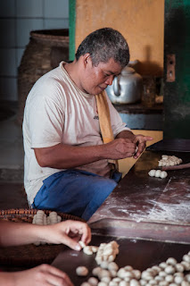

"Setiap gigitan adalah warisan — rasa yang sama, dijaga sejak pertama kali getuk ini digoreng di Sokaraja."
Getuk Goreng ASLI Haji Tohirin 6A adalah toko oleh-oleh khas Sokaraja, Banyumas yang telah lama menjaga keaslian cita rasa makanan tradisional Jawa Tengah. Berlokasi di Jl. Jend. Soedirman No. 67, Sokaraja Tengah, toko ini menjadi salah satu destinasi wajib bagi wisatawan maupun warga lokal yang ingin membawa pulang cita rasa otentik Banyumas.
Kami memproduksi berbagai produk makanan tradisional — mulai dari getuk goreng sebagai produk andalan, hingga nopia, klanting bumbu, dan klanting original — dengan berbagai varian rasa yang telah dicintai pelanggan dari seluruh penjuru Indonesia.
Komitmen kami sederhana: menjaga keaslian bahan, proses, and rasa agar setiap produk yang sampai ke tangan Anda benar-benar mencerminkan kekayaan kuliner Sokaraja.
Banyumas 53181, Jawa Tengah
Siap Memesan Produk Kami?
Hubungi kami langsung via WhatsApp atau kunjungi toko kami di Sokaraja.